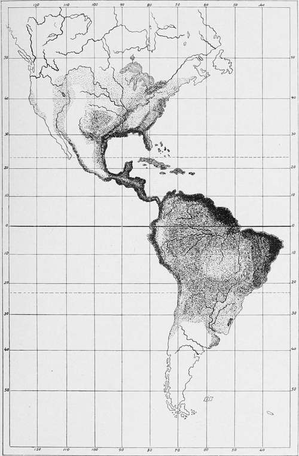

Geographic Distribution
Description
This section is from the book "Malaria, Influenza And Dengue", by Julius Mennaberg and O. Leichtenstern. Also available from Amazon: Malaria, influenza and dengue.
Geographic Distribution
Malaria is one of the most widely distributed infectious diseases; yet its distribution is by no means uniform, for it is most prevalent in the region of the equator and gradually diminishes toward the north and south. The most northerly point at which malaria has been observed is, as far as we have any knowledge, Brahestad (64° 41' N. L.), in Finland. Here, in 1861, Hjelt reported intermittent fever, though, as was to be expected, with only occasional epidemic spread. According to Hirsch, the isotherm from 15° to 16° indicates the confines within which the disease is always seen.*
Malaria flourishes in infected regions as an annual recurring disease of greater or less severity. Sometimes, however, it oversteps its usual boundaries, assumes an epidemic or pandemic character, and spreads to territories that are otherwise exempt.
Within historic times the distribution of malaria has experienced important changes. Entire countries that were once severely afflicted are now without a case, and vice versa.
At the beginning of this century Holland showed an endemicity that stood qualitatively and quantitatively scarcely behind that of the present Agra Romana. This is now limited to a relatively small focus, and no longer presents anything like the malignity of earlier times. From the comparison of the reports of Sydenham and Morton with the evidence of the present day, the same is true of London, as well as of England and Ireland.
In France, the regions of Rochefort, the banks of the Loire, the mouth of the Gironde, of the Adour, etc.; in Germany, the regions of the Harz Mountains, Augsburg, and Wurtemberg, are now almost immune, though they were in the past dangerous foci.
In Austria-Hungary, also, numerous malarial foci have disappeared. Vienna, Prague, Komorn not uncommonly showed fatal cases of malaria , even up to the middle of the nineteenth century, while such occurrences are now very rare.
On the other hand, malaria is continually making new conquests in other countries. Italy is such an example from olden times; the islands of Mauritius and Reunion, numerous places in North America, Chile, and in a lesser degree Sweden are recent examples.
* Places with a mean summer temperature of 15° to 16°.
PLATE I.
Showing the distribution of malaria as indicated by the intensity of the shading.
The most important foci of malaria to be found at present are the following*:
Africa shows its worst malarial foci in the tropical regions. On the west, the whole coast from Senegal to Kongo is the home of severe forms. Of the islands along this coast, Fernando Po and St. Thomas are infected, and St. Helena free. From Kongo downward, on the whole, the foci decrease in extent and the disease in severity. Yet in German Southwest Africa intense malaria also occurs. Cape Colony is practically exempt.
In the southeast the islands of Madagascar, Mayotta (Comoro), Nossi Be, La Reunion, and Mauritius represent also intense malarial foci. The coast itself, from Delagoa bay to Zanzibar, is intensely infected. The west coast of the Red Sea is, with the exception of a few places (as the prolific Massawa), but little contaminated.
Somaliland and Abyssinia, especially in their mountainous districts, are pretty well spared, though between Abyssinia and the Chad swamp an immense malarial region stretches into the interior, including Nubia, the lowlands of Kordofan and Darfur (therefore a great part of the Sudan).
Upper and central Egypt manifest the disease but seldom, though the region of the Nile Delta, beginning at the province of Fayum, is here and there infected.
In northern Africa the disease is especially endemic in Algeria. We may name especially in the province of Algiers, the Alloulah Lake and the banks of the Chiffa; in the province of Oran, the plains of Sig and Habra; in the province of Constantine, the plains of Sey bouse and Lake Fezzara. The conditions in Algeria have decidedly improved under French rule, as is evident from the army sanitary reports. In former years the morbidity from malaria in the Algerian garrison amounted to 48 per cent, of the whole force. In late years (quoted from Laveran):
In 1890 malaria morbidity..................146.00 per cent.
" " " mortality.................. 1.50 "
Fifty eight of the deaths were due to pernicious attacks; 43 to cachexia; 21 to remittent fever, making 112 in all.
* We have taken our data especially from Hirsch, to whose excellent work we refer the student for further details.
In 1893 malaria morbidity | 84.06 per cent. |
In 1893 malaria mortallity | 1.71 " |
In 1894 malaria morbidity | 99.30 " |
In 1894 malaria mortality | 1.03 " |
Some of the oases of the Great Desert, as Biskra, Tuggurt, Oua regla, are also infected, thus making a continuation of the foci in the Sudan.
In Tripoli and Tunis there are several foci about the interior lakes, oases, etc.
Asia shows foci on the west and south coast of Arabia (especially Muscat), the coast of the Persian gulf, Mesopotamia, the Syrian coast (Palestine), and the banks of the Black Sea, whence the disease extends over the marshy coast of the Caspian Sea to Persia. Hotbeds are also found in Beluchistan and Afghanistan.
India
The extent to which malaria prevails in India is difficult of determination. Of so little value are Indian statistics, from the way in which the majority are compiled by uninstructed subordinate officials and from the fact that a large, if not the larger, portion of the fevers so classified is not malarial in nature, that we must hesitate in making any very definite statements. With some exceptions malaria does not attain in India that intensity it does in tropical Africa, and whereas in Africa the malignant tertian parasite gives its stamp to the character of the fevers, in India it is the simple tertian parasite that prevails. The Terai, at the foot of the eastern Himalayas, undoubtedly, even to the present day, merits the ill fame attached to its name, and as we pass from here into Assam, we still find foci of severe malaria and malarial hemoglobinuria. In the hill regions of Madras malaria may also occur with equal intensity, whereas in the plain districts of Madras malaria, though prevalent, is of a much less intensity. Probably along the western Ghats malaria will be found to be intense. Malaria, though widely prevalent elsewhere, yet does not attain the severity of those parts mentioned, and we have not a few towns in India, such as Calcutta and Bombay, where malaria, even in the environs, is almost negligible.
Continue to:
- prev: Malarial Diseases. General Part. History. Continued
- Table of Contents
- next: Geographic Distribution. Part 2
Tags
mosquito, malaria, influenza, dengue, symptoms, outbreaks, diseases, hemoglobinuria, infections